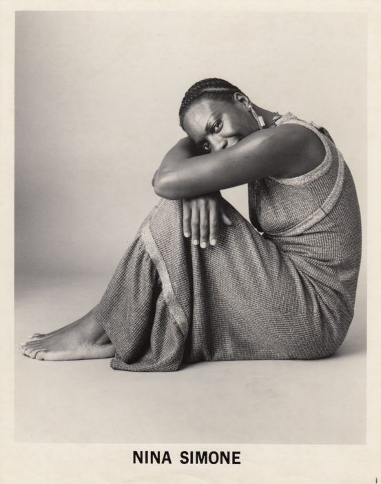

Born Eunice Kathleen Waymon on February 21, 1933, in Tryon, North Carolina, Nina Simone took to music at an early age, learning to play piano at the age of 3 and singing in her church's choir. Simone's musical training over the years emphasized classical repertory along the lines of Beethoven and Brahms, with Simone later expressing the desire to have been recognized as the first major African-American concert pianist. Her music teacher helped establish a special fund to pay for Simone's education and, after finishing high school, the same fund was used to send the pianist to New York City's famed Juilliard School of Music to train.